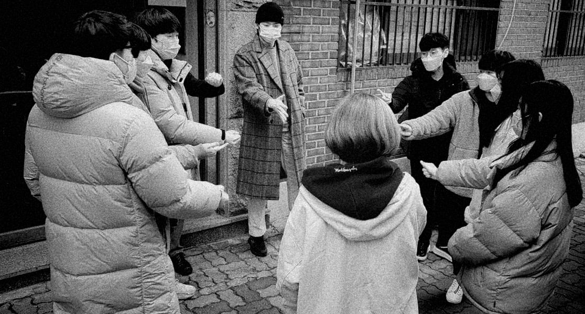

2021 SPRING INTERNSHIP FOR STUDENTS
지금 부족하다고 생각해도 꼭 도전해보세요. 나를 도와줄 팀원들이 있어요. 한 단계 더 성장하는 기회가 될 거에요.(박OO, 국민대 3학년)
서버 개발에 있어서 밑바닥부터 클라우드 배포까지 경험해볼 수 있었습니다. 뉴로어소시에이츠 강력 추천합니다. 너무 좋은 분위기에서 개발할 수 있고, 다양한 경험 할 수 있습니다. 본인이 의지가 있다면 이사님, 대표님이 아낌없이 도와주십니다. 두려워하지말고 도전하세요~! (이OO, 국민대 4학년)
자신의 생각을 마음껏 펼칠 수 있는 자유로운 분위기이고 내부 세미나를 통해 앞으로 어떤 공부를 해야하는지 스스로 깨닫게 해줍니다. 그리고 이사님께서 매일 업무나 세미나 주제에 대한 피드백과 조언을 해주셔서 더 좋은 방향으로 나아갈 수 있었습니다. 진짜 다 너무 좋았습니다! (김OO, 국민대 4학년)
인턴 처음 한건데 진짜 너무 좋았어요. 앞으로 다른 곳에서 할 때 뉴로가 그리울 거 같을 정도로 좋았습니다! 프로젝트에서 본인이 많은 역할을 경험해보고 싶으신 분들이 하면 본인이 원하는 역할을 할 수 있을거같아요. (차OO, 국민대 2학년)
어느 회사를 가서 인턴십을 진행해도 뉴로어소시에이츠만큼 얻어 갈 수 있는 것이 많은 인턴십은 없을 것입니다. 여러분이 상상하시는 것보다 훨씬 많은 것들을 여러 인턴분들과 즐겁고 알차게 인턴십을 진행 하실 수 있으실 것입니다. 자신의 개발 스킬을 한층 더 업그레이드 시키고 싶으신 분이라면 주저 마시고 뉴로어소시에이츠 인턴십에 합류해 보세요! (송OO, 국민대 3학년)
매일 코드 리뷰를 한 것이 서로 서로가 피드백을 많이 주고받을 수 있어서 더 좋은 결과물을 도출 해낼 수 있었던 것 같습니다. 팀원들과 해결할 수 없는 이슈나 고민이 있을 때 이사님께 말씀드리면 해결 방법에 대한 방향성을 알려주시거나 조언을 해주셔서 프로젝트 진행에도 도움을 주시고 기술 스택 스킬도 많이 알아갈 수 있어서 인턴십 프로그램을 하게 된다면 정말 값진 경험을 할 수 있을 것이라고 생각합니다. (임OO, 국민대 3학년)
위 내용을 포함한 모든 분야에 열려있습니다.
업무형태
자격 조건

업무소개
모집분야
자격 조건
우대사항
위 경험이 없더라도 용기를 갖고 지원해주시면 충분히 검토해 전형을 진행해드립니다. 다음의 내용이 잘 드러나도록 구성된 문서와 함께 문의주세요.

자격 조건
우대사항